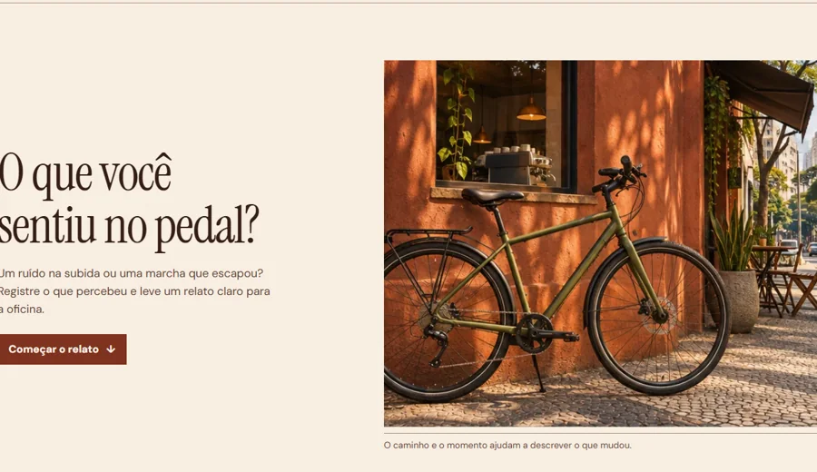
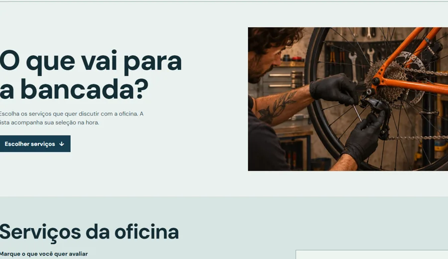
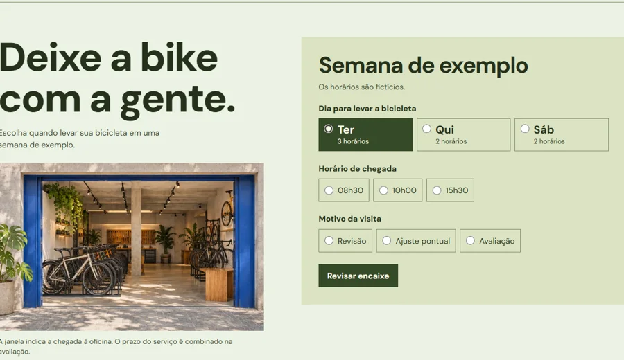

Três experiências para preparar a ida de uma bicicleta à oficina.

Organize o que você percebeu na bicicleta.

Monte uma lista de serviços para avaliar com a oficina.

Explore os dias e escolha uma janela fictícia de entrega.